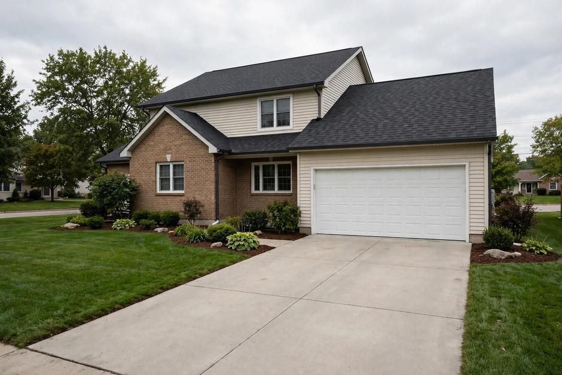
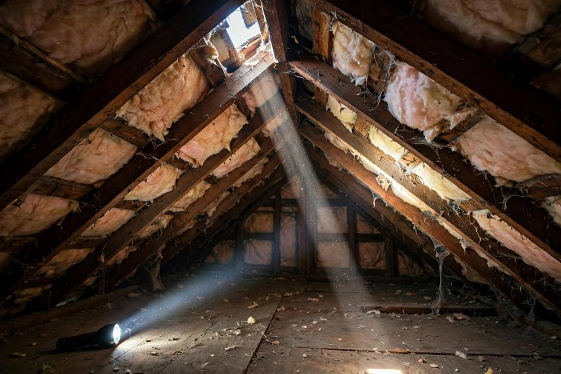
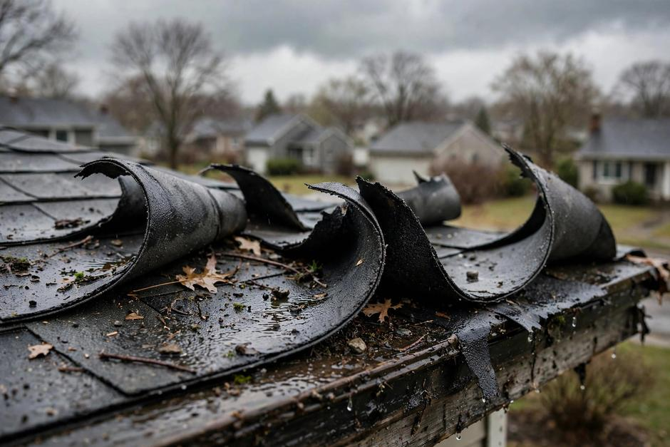

Upstairs rooms that stay hot
A blocked or incomplete ventilation path holds heat in the attic. Ask how intake and exhaust would be checked as a pair before any scope is agreed.
Attic ventilation Des Plaines IL homeowners ask about is part of the roof system, not a separate trade: air enters at the soffits, moves under the deck, and leaves at the ridge or roof vents. This page explains intake and exhaust, the ice-dam mechanism that makes ventilation a winter topic in Des Plaines, and what the City's Roof Guide describes — with scope confirmed when you call (224) 802-4866.
Call (224) 802-4866 during business hours and describe what you are seeing. Hours: Mon–Tue 7:30 AM–7:00 PM, Wed–Fri 7:30 AM–7:30 PM, Sat 8:30 AM–5:00 PM, Sun closed.
Call Now (224) 802-4866 → No online booking. No email. Phone calls only.
Ventilation is a path, not a product. Cool air enters low, at soffit vents under the eaves; it travels beneath the roof deck; and it leaves high, at a ridge vent or roof vents. If either end of the path is missing or blocked — soffit vents covered by insulation, a ridge vent with no intake, exhaust vents added without matching intake — the path does not work as intended, and the attic holds heat in summer and moisture in winter. That is why guidance treats intake and exhaust as a pair, and why adding exhaust alone is not treated as a fix.
The strongest local angle is ice dams. Warm air escaping into the attic warms the deck, snow on the roof melts, and the meltwater refreezes at the colder eave, building a dam that backs water under the roofing. Guidance from the University of Minnesota Extension, as cited by a Chicago source, puts the order as air sealing first, then insulation, then ventilation — ventilation is one leg of the response, not the cure alone. Mid-century homes, common across Des Plaines including around Downtown Des Plaines and Orchard Place, often have thin original insulation, blocked soffit vents or mixed vent types, a recurring Chicagoland pattern described in general guidance. If water is already coming in, see the emergency roof repair page; for the wider leak conversation, see roof repair.
These are the parts of a ventilation path, described in general terms. Insulation and air sealing are discussed only as part of the hierarchy — this page claims no insulation or air-sealing work.
Air enters at soffit vents under the eaves. Blocked or missing intake is a common finding in general guidance about mid-century homes. Ask how intake would be checked.
Air leaves at the ridge or through roof vents. Ask how exhaust is matched to intake, and how mixed vent types on one roof would be treated.
Attic heat warms the deck, snow melts, meltwater refreezes at the eave, and water backs up under the roofing. Ventilation helps keep the deck cold; it does not, alone, prevent ice dams.
Guidance from the University of Minnesota Extension, as cited by a Chicago source, orders the response: air sealing, then insulation, then ventilation. This page makes no insulation or air-sealing offer; those are separate trades to ask about elsewhere.
The City's Roof Guide describes ventilation at 1:150, or 1:300 with roof and soffit vents. That is the Guide's shorthand, and it omits conditions found in the full code rule. Confirm current requirements with the Building Division.
Call (224) 802-4866 and describe what you notice: ice dams, summer heat upstairs, frost or moisture in the attic, or a ventilation recommendation from another visit. Ask what ventilation scope is available and what the next step would be.
The intake, exhaust, deck condition and accessible attic conditions are looked at. Ask what the visit covers, including whether soffit vents are blocked, and how findings are shared with you.
Ask for findings and an estimate in writing, describing the intake and exhaust as a pair, any code description relied on, and anything outside the roofing scope — such as insulation or air sealing — that would need another trade.
Confirm what is included and excluded in writing. No ice-dam prevention is promised on this page, and no insulation or air-sealing work is claimed.
Ask how the finished path is checked, what you are shown when the work is done, and what records you keep.
These details describe how a ventilation path behaves. They are general education about the roof system.
Exhaust without intake pulls air from wherever it can — including from the living space below. Intake at the soffits gives the path its supply of outside air.
Exhaust belongs high, at the ridge or near it, so the path runs the full slope. Ask how exhaust and intake are balanced for the roof in question.
Roofs sometimes carry more than one exhaust type, added at different times. General guidance treats mixing as a topic to ask about, not as an automatic improvement.
Insulation can block soffit vents, cutting off intake. Baffles are the general means of keeping the air path open at the eaves. Ask whether blocked intake would be checked.
The same intake-and-exhaust path that keeps the deck cold in winter carries hot air out in summer. Ventilation is a year-round roof-system topic, not only a winter one.
The eave is where ventilation intake, fascia, soffit and gutters meet. Blocked or failed gutters can worsen ice-dam conditions. See the gutter replacement page for the roofline side of the story.
Ice builds at the eaves each winter, and water backs under the roofing near exterior walls. The attic is warm, and the deck above it is warm too.
Ask about the full hierarchy — air sealing, insulation, ventilation — and what part of it is roofing scope. Ventilation alone is not presented here as a cure.
Upstairs rooms stay hot while the cooling runs, and the attic holds heat long after sunset. The ventilation path may be incomplete or blocked.
Ask how intake and exhaust would be checked as a pair, and whether soffit vents are blocked.
A ridge vent or roof vents were added, but no intake was provided, and the attic problems did not change.
Ask how the path would be assessed as a whole, and what the City Roof Guide description means for that roof.
These problems are associated with ventilation in general guidance. Each has more than one possible cause, and ventilation is only part of the picture. This page is about prevention and the roof system; removing ice from a roof is different work and is not described here.
Ask a pro →A blocked or incomplete ventilation path holds heat in the attic. Ask how intake and exhaust would be checked as a pair before any scope is agreed.
Moist air reaching a cold deck condenses and can frost in winter. Ventilation, air sealing and insulation all bear on it; this page claims only the ventilation conversation.
Attic heat melts snow, which refreezes at the eave and backs water under the roofing. See the emergency roof repair page if water is coming in, and the roof inspection page for a wider look.
Heat held under the deck is described in general guidance as hard on roofing. Ask how the ventilation path relates to the roof covering on your house.
“Patryk was great to work with and extremely professional. I highly recommend WP exteriors and plan on using them again in the future!”
Brian Avila Gaona5 months ago · Roof inspection · Google review
✓ Google review“I recently had the pleasure of working with WP Exterior for my roofing needs, and I must say, I couldn't be more satisfied with the outcome. From the moment I contacted them, it was evident that they truly value their customers. …”
Filip Libera2 years ago · Google review · Verbatim excerpt
✓ Google review“Thank you Patrick for doing an amazing job. Great work me and my wife are very happy. Also thanks for being reliable.”
Phil Negron2 months ago · Gutter repairs · Google review
✓ Google reviewNot alone. Ice dams form when attic heat warms the deck, snow melts, and meltwater refreezes at the colder eave. Guidance from the University of Minnesota Extension, as cited by a Chicago source, orders the response as air sealing first, then insulation, then ventilation. Ventilation is one leg of the response, and no ice-dam prevention is promised on this page.
The City's Roof Guide describes ventilation at 1:150, or 1:300 with roof and soffit vents. That is the Guide's shorthand, and it omits conditions found in the full code rule. Confirm current requirements with the Building Division before relying on either figure.
No, not on this page. Insulation installation, air sealing and insulation removal are separate work, and this page claims none of them. They are discussed only as part of the attributed hierarchy: air sealing, then insulation, then ventilation. Ask another trade about insulation and air sealing.
Not by itself, if intake is missing. A ventilation path needs air entering at the soffits and leaving at the ridge or roof vents. Exhaust without intake does not complete the path. Ask how intake and exhaust would be checked as a pair.

Roof ReplacementFull tear-off and replacement, the code and climate angles for Des Plaines, and how repair and replacement compare.Explore → Roof RepairLeak repair, flashing and the repair-or-replace decision, explained for Des Plaines roofs.Explore →
Roof RepairLeak repair, flashing and the repair-or-replace decision, explained for Des Plaines roofs.Explore →
Roof InspectionWhat an inspection covers, when one matters locally, and how findings are shared in writing.Explore → Flat Roof RepairLow-slope systems, seams, ponding and tie-ins, with repair-or-replace questions to ask.Explore →
Flat Roof RepairLow-slope systems, seams, ponding and tie-ins, with repair-or-replace questions to ask.Explore → Emergency Roof RepairActive leaks and storm breaches: what stabilisation means, safety while waiting, and honest scope limits.Explore →
Emergency Roof RepairActive leaks and storm breaches: what stabilisation means, safety while waiting, and honest scope limits.Explore →
Storm Damage Roof RepairHail and wind damage in one place: mechanisms, documentation, and the lawful contractor role.Explore → Skylight InstallationSkylight replacement, reflashing and leak sources, with fixed and venting units explained.Explore →
Skylight InstallationSkylight replacement, reflashing and leak sources, with fixed and venting units explained.Explore →Call (224) 802-4866 during business hours to describe what you are noticing and ask what ventilation help is available. Hours: Mon–Tue 7:30 AM–7:00 PM, Wed–Fri 7:30 AM–7:30 PM, Sat 8:30 AM–5:00 PM, Sun closed.
Call (224) 802-4866 →Call (224) 802-4866 to talk about your roof. Describe what you are seeing — a leak, a stain, damage after a storm — and ask what help is available and what the next step would be. There is no online booking and no email contact. Hours: Mon–Tue 7:30 AM–7:00 PM, Wed–Fri 7:30 AM–7:30 PM, Sat 8:30 AM–5:00 PM, Sun closed. The office is at 638 Birchwood Ave, Des Plaines, IL 60018.